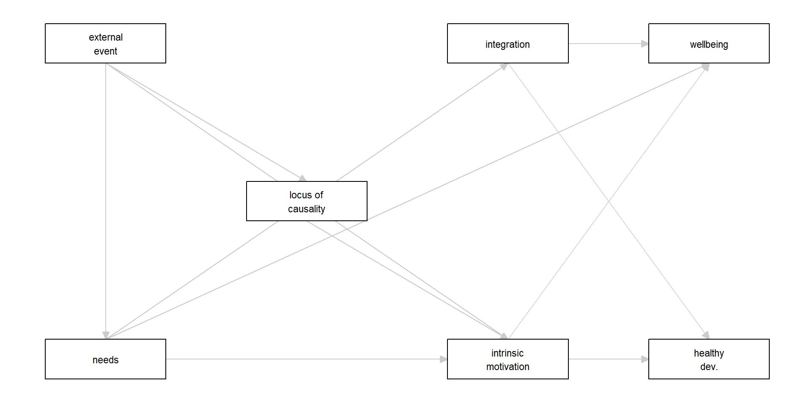

[1] "“For these natural, active processes of intrinsic motivation and integration to operate effectively toward healthy development and psychological well-being, human beings need particular nutriments – both biological and psychological (Ryan, 1995). In the relative absence of such nutriments, these natural processes will be impaired, resulting in experiences, development, and behaviors that are less than optimal. (Deci & Ryan, 2012, p. 417)"
[2] "“The three basic psychological needs are universal such that their satisfaction versus thwarting affects the psychological well-being of all people.” (Deci & Ryan, 2012, p. 425)"
[3] "“rewards do not always motivate subsequent persistence; indeed they can undermine intrinsic motivation” (Deci & Ryan, 2012, p. 417)"
[4] "“[Intrinsic motivation] could be either undermined or enhanced depending on whether the social environment supported or thwarted the needs for competence and self-determination. If a reward or other external event such as threat of punishment (Deci and Cascio, 1972), positive feedback (Deci, 1971), competition (Deci and Betley et al., 1981), or choice (Zuckerman et al., 1978) were expected to thwart these basic needs, it was predicted to prompt an external perceived locus of causality and undermine intrinsic motivation; but if the event were expected to support these basic needs, it was predicted to prompt an internal perceived locus of causality and enhance intrinsic motivation.” (Deci & Ryan, 2012, p. 418)"Formalizing
Self-Determination Theory
The ‘FAIR’ Way
Van Lissa, Li, & Weber
Overview
Proposition-Based Theory Specification (PBTS) (Glöckner & Fiedler):
- Source selection
- Propositions/implications
- Definitions
- Problems
Unique contribution:
- Create a FAIR theory (Van Lissa et al., 2025)
Why SDT?
The role of fathers’ versus mothers’ parenting in emotion-regulation development from mid–late adolescence
(Van Lissa et al., 2019)
Why FAIR Theory?
“There’s nothing as useful as a good theory” (William James)
- What use does theory serve in my work? Nothing practical
- More like a “framework” to contextualize the work
“Theory Crisis” in Psychology
- 89.6% of published studies tests hypotheses (Kühberger, Fritz, and Scherndl 2014).
- only 15% of deductive studies even reference specific theories (McPhetres et al. 2021).
- most claims [are] so critically underspecified that attempts to empirically evaluate them are doomed to failure - they are not even wrong.” (Scheel 2022)
- “Theories are rarely developed in a way that indicates an accumulation of knowledge.” (Robinaugh et al. 2021)
The Empirical Cycle

De Groot, 1963
The Solution: FAIR Theory
- Open science practices have improved many areas of research
- Let’s apply them to theory as well
Findability, Accessibility, Interoperability, and Reuse of
information artifacts
What kind of Theories?
- IF/THEN propositions (as in PBST)
- Directed Acyclic Graphs
- Nomological Networks
- Formulas
- Axiomatic Systems
- Computer Programs
- Simulation Models
Findable
- In standardized, FAIR-compliant repository, like Zenodo (which integrates with OSF)
- Indexed and searchable
- With abundant metadata describing the theory and its provenance
- Via persistent identifier, or DOI
Accessible
- Plain text, human- and machine-readable file types
- Everyone knows how to, and ideally can, access the theory
- The theory is a distinct resource, separate from (but possibly related to) a paper or book (chapter)
Interoperable
- Interoperability: the property of information artifacts to “integrate or work together […] with minimal effort” (M. D. Wilkinson et al., 2016).
- Use formal, accessible, shared, and broadly applicable language for knowledge representation.
- Lengthy prose/schematic drawings fall short of this
- Use standardized vocabularies/ontologies that also follow FAIR principles
- X-interoperable: Interoperable for what?
- Document how a theory is interoperable for specific purposes
Reusable
- Legally and practically reusable
- Appropriate (permissive) license
- Meet domain-relevant community standards
- Detailed provenance, referencing ancestors
FAIR Theory Utopia
- No more toothbrushes
- “[Theories are] like toothbrushes — no self-respecting person wants to use anyone else’s” (Mischel 2008)
- Let a thousand flowers bloom:
- “Progress in science depends on more than just a play of ideas; it requires the proliferation of theories and the acceptance of alternatives.” (Feyerabend, 1970)
- But kill your darlings:
- “theories […] never die, they just slowly fade away.” (Meehl 1978)
- Theories have families, similar in form (analogical modeling) and similar in topic, but using different terms (jingle-jangle fallacies)
- Theories have a history, a full timeline of their ancestry and development
- Automatic tests can be run on all available datasets, pitting theories against each other in an ongoing manner (leaderboard/integration testing)
FAIRifying Self-Determination Theory
Step 1 - Select Sources
- SDT chapter: Deci and Ryan (2012) in Van Lange, Kruglanski, and Higgins (2012)
- Also considered https://selfdeterminationtheory.org
- ~same theory, different prose
- Also considered five “mini theories”
- “we have developed five mini-theories to address different, though related, issues”
- Main theory is already sufficiently complex
- Not clear how the mini-theories fit with main SDT
Step 1 - Select Sources 2
Coders identify snippets:
Step 2 - IF–THEN Propositions
| N | IF | THEN | Original |
|---|---|---|---|
| 1 | nutriments are absent | intrinsic motivation AND integration are impaired | “For these natural, active processes of intrinsic motivation and integration to operate effectively toward healthy development and psychological well-being, human beings need particular nutriments – both biological and psychological (Ryan, 1995). In the relative absence of such nutriments, these natural processes will be impaired, resulting in experiences, development, and behaviors that are less than optimal. (Deci & Ryan, 2012, p. 417) |
| 2 | [intrinsic motivation OR integration] is present | healthy development AND psychological well-being take place | “For these natural, active processes of intrinsic motivation and integration to operate effectively toward healthy development and psychological well-being, human beings need particular nutriments – both biological and psychological (Ryan, 1995). In the relative absence of such nutriments, these natural processes will be impaired, resulting in experiences, development, and behaviors that are less than optimal. (Deci & Ryan, 2012, p. 417) |
| 3 | needs are satisfied or thwarted | psychological well-being of all people is affected | “The three basic psychological needs are universal such that their satisfaction versus thwarting affects the psychological well-being of all people.” (Deci & Ryan, 2012, p. 425) |
| 4 | rewards given | intrinsic motivation can decrease | “rewards do not always motivate subsequent persistence; indeed they can undermine intrinsic motivation” (Deci & Ryan, 2012, p. 417) |
| 5 | external event is expected to thwart the basic needs | external perceived locus of causality | “[Intrinsic motivation] could be either undermined or enhanced depending on whether the social environment supported or thwarted the needs for competence and self-determination. If a reward or other external event such as threat of punishment (Deci and Cascio, 1972), positive feedback (Deci, 1971), competition (Deci and Betley et al., 1981), or choice (Zuckerman et al., 1978) were expected to thwart these basic needs, it was predicted to prompt an external perceived locus of causality and undermine intrinsic motivation; but if the event were expected to support these basic needs, it was predicted to prompt an internal perceived locus of causality and enhance intrinsic motivation.” (Deci & Ryan, 2012, p. 418) |
| 6 | external perceived locus of causality | undermined intrinsic motivation | “[Intrinsic motivation] could be either undermined or enhanced depending on whether the social environment supported or thwarted the needs for competence and self-determination. If a reward or other external event such as threat of punishment (Deci and Cascio, 1972), positive feedback (Deci, 1971), competition (Deci and Betley et al., 1981), or choice (Zuckerman et al., 1978) were expected to thwart these basic needs, it was predicted to prompt an external perceived locus of causality and undermine intrinsic motivation; but if the event were expected to support these basic needs, it was predicted to prompt an internal perceived locus of causality and enhance intrinsic motivation.” (Deci & Ryan, 2012, p. 418) |
| 7 | external event is expected to support the basic needs | internal perceived locus of causality | “[Intrinsic motivation] could be either undermined or enhanced depending on whether the social environment supported or thwarted the needs for competence and self-determination. If a reward or other external event such as threat of punishment (Deci and Cascio, 1972), positive feedback (Deci, 1971), competition (Deci and Betley et al., 1981), or choice (Zuckerman et al., 1978) were expected to thwart these basic needs, it was predicted to prompt an external perceived locus of causality and undermine intrinsic motivation; but if the event were expected to support these basic needs, it was predicted to prompt an internal perceived locus of causality and enhance intrinsic motivation.” (Deci & Ryan, 2012, p. 418) |
| 8 | internal perceived locus of causality | enhanced intrinsic motivation | “[Intrinsic motivation] could be either undermined or enhanced depending on whether the social environment supported or thwarted the needs for competence and self-determination. If a reward or other external event such as threat of punishment (Deci and Cascio, 1972), positive feedback (Deci, 1971), competition (Deci and Betley et al., 1981), or choice (Zuckerman et al., 1978) were expected to thwart these basic needs, it was predicted to prompt an external perceived locus of causality and undermine intrinsic motivation; but if the event were expected to support these basic needs, it was predicted to prompt an internal perceived locus of causality and enhance intrinsic motivation.” (Deci & Ryan, 2012, p. 418) |
Step 3 - Definitions
| Concept | Operationalization |
|---|---|
| Needs | Missing: Not given in chapter, could not find |
| Intrinsic motivation | Derived from other source: Not given in chapter, but chapter references paper with definition: Mean number of seconds spent working on puzzle during eight-minute free choice period. Reference: https://doi.org/10.1037/h0030644 |
| integration | Derived from other source: Not given in chapter, But chapter references paper with definition: “ongoing reciprocal assimilation between schemas, such that there tends to be an internal consistency and equilibration among varied functions and structures”. Reference: https://doi.org/10.1111/j.1467-6494.1995.tb00501.x |
| Healthy development | Missing: Not given in chapter, could not find |
| Psychological wellbeing | Derived from other source: Not given in chapter, chapter cites paper with definition: “positive affect, vitality, and physical symptoms”. Reference: https://doi.org/10.1177/01461672962212007 |
| external event | Positive feedback (Ryan, 1982), performance-contingent monetary rewards (Ryan et al., 1983), limits set on children (Koestner et al., 1984). References: Ryan, 1982 https://doi.org/10.1037/0022-3514.43.3.450 Ryan et al., 1983 https://doi.org/10.1037/0022-3514.45.4.736 Koestner et al., 1984 https://selfdeterminationtheory.org/SDT/documents/1984_KoestnerRyanBernHolt.pdf |
| external perceived locus of causality | Derived from other source: Not given in chapter. Most useful resource is Ryan & Connell, 1989 https://doi.org/10.1037/0022-3514.57.5.749 They use structured interviews, and the Multidimensional Measure of Children’s Perceptions of Control (Connell, 1985). Reference: Ryan & Connell, 1989 https://doi.org/10.1037/0022-3514.57.5.749 |
| internal perceived locus of causality | Derived from other source: Not given in chapter. Most useful resource is Ryan & Connell, 1989 https://doi.org/10.1037/0022-3514.57.5.749 They use structured interviews, and the Multidimensional Measure of Children’s Perceptions of Control (Connell, 1985). Reference: Ryan & Connell, 1989 https://doi.org/10.1037/0022-3514.57.5.749 |
Step 4 - Auxiliary Assumptions
Not applicable, skip
Step 5 - Problems
- Redundancy/tautology
- Prose easily translates to IF/THEN propositions
- Each proposition is illustrated multiple times, usually in the positive and negative sense
- Underspecified: None of the constructs are defined, often not even in referenced sources.
- Compound statements; many IF/THEN propositions in one sentence, which makes them hard to disentangle
Issues experienced
- Disagreement about selection of sources
- Especially main theory/mini-theories
- Disagreement about how to unpack compound sentences containing more than one IF/THEN statements
- Limitation of PBTS
- IF/THEN format is binary
- Well-suited to experiments, not to probabilistic of dose/response relationships
From IF–THEN to DAG
- IF–THEN statements imply a causal connection
| from | to |
|---|---|
| needs | intrinsic_motivation |
| needs | integration |
| intrinsic_motivation | healthy_development |
| intrinsic_motivation | wellbeing |
| integration | healthy_development |
| integration | wellbeing |
| needs | wellbeing |
| external_event | intrinsic_motivation |
| external_event | needs |
| external_event | locus_of_causality |
| locus_of_causality | intrinsic_motivation |
Turn Into DAG
SDT <- dagitty::dagitty(
paste0("dag {",
paste0(SDT$from, " -> ", SDT$to, collapse = "\n"),
"}")
)
SDTdag {
external_event
healthy_development
integration
intrinsic_motivation
locus_of_causality
needs
wellbeing
external_event -> intrinsic_motivation
external_event -> locus_of_causality
external_event -> needs
integration -> healthy_development
integration -> wellbeing
intrinsic_motivation -> healthy_development
intrinsic_motivation -> wellbeing
locus_of_causality -> intrinsic_motivation
needs -> integration
needs -> intrinsic_motivation
needs -> wellbeing
}Step 4 — Make It FAIR
Package SDT as a FAIR theory:
README Highlights (Interoperability)
sdt.txt: DAG, with instructions for causal inference & data simulationdefinitions.csv: Construct definitions (current gaps noted)- Related works: Deci & Ryan (2012), other references
- License: CC0, or copy-left (explicit waiver of copyright)
View final result: https://doi.org/10.5281/zenodo.15648655
Interoperability
Interoperability: Plotting
Interoperability: Control Variables
Interoperability: Simulate Data
external_event healthy_development integration intrinsic_motivation
1 -0.38 0.45 -1.17 -0.44
2 -1.46 0.92 -0.77 -1.24
3 0.06 -0.23 2.17 0.13
4 -0.48 -2.00 -0.72 0.06
5 -0.10 -0.09 -0.96 -0.89
locus_of_causality needs wellbeing
1 1.06 0.84 -0.91
2 -0.95 2.21 0.01
3 -0.89 -0.78 2.56
4 0.47 0.51 2.08
5 -1.09 0.06 -0.51Interoperability: Power Analysis
Join Us!
The Theory Methods Society is a community dedicated to advancing theory (development) across disciplines
- Expand your network
- Learn about relevant events
- Receive job opportunities
If you are interested in:
- Theory development
- Formal theories
- Toy models
- Philosophy of science
- (Interpretable) machine learning
- Simulation studies
- Meta-science
- Open science
Deci, Edward L., and Richard M. Ryan. 2012. “Self-Determination Theory.” In Handbook of Theories of Social Psychology: Volume 1, edited by Paul A. M. Van Lange, Arie W.Kruglanski, and E. ToryHiggins, 416–37. SAGE Publications Ltd. https://doi.org/10.4135/9781446249215.
Kühberger, Anton, Astrid Fritz, and Thomas Scherndl. 2014. “Publication Bias in Psychology: A Diagnosis Based on the Correlation Between Effect Size and Sample Size.” PLoS ONE 9 (9): e105825. https://doi.org/10.1371/journal.pone.0105825.
McPhetres, Jonathon, Nihan Albayrak-Aydemir, Ana Barbosa Mendes, Elvina C. Chow, Patricio Gonzalez-Marquez, Erin Loukras, Annika Maus, et al. 2021. “A Decade of Theory as Reflected in Psychological Science (2009–2019).” PLOS ONE 16 (3): e0247986. https://doi.org/10.1371/journal.pone.0247986.
Meehl, Paul E. 1978. “Theoretical Risks and Tabular Asterisks: Sir Karl, Sir Ronald, and the Slow Progress of Soft Psychology.” Journal of Consulting & Clinical Psychology 46 (4): 806–34.
Mischel, Walter. 2008. “The Toothbrush Problem.” APS Observer 21 (December). https://www.psychologicalscience.org/observer/the-toothbrush-problem.
Robinaugh, Donald J., Jonas M. B. Haslbeck, Oisín Ryan, Eiko I. Fried, and Lourens J. Waldorp. 2021. “Invisible Hands and Fine Calipers: A Call to Use Formal Theory as a Toolkit for Theory Construction.” Perspectives on Psychological Science 16 (4): 725–43. https://doi.org/10.1177/1745691620974697.
Scheel, Anne M. 2022. “Why Most Psychological Research Findings Are Not Even Wrong.” Infant and Child Development 31 (1): e2295. https://doi.org/10.1002/icd.2295.
Van Lange, Paul, Arie Kruglanski, and E. Higgins. 2012. Handbook of Theories of Social Psychology: Volume 1. 1 Oliver’s Yard, 55 City Road, London EC1Y 1SP United Kingdom: SAGE Publications Ltd. https://doi.org/10.4135/9781446249215.